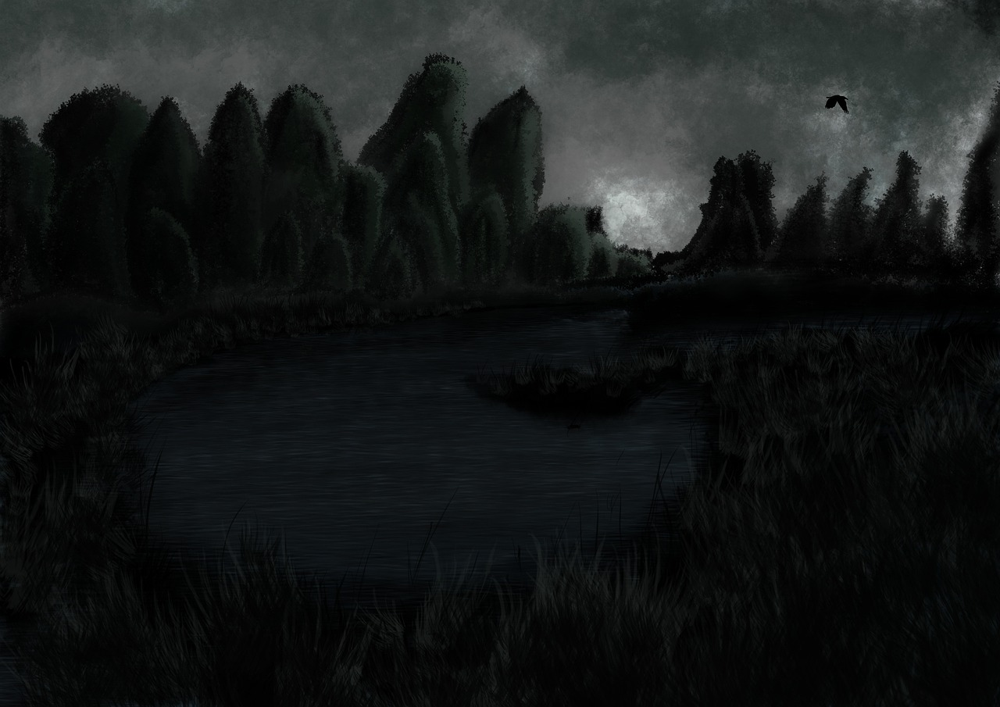

~ Greendale Academy ~
Przed tysiącem lat, w magicznym świecie zatopionym w złotej aurze, dwa elfy o imionach Elara i Elionor, oraz dwoje czarodziei znanych jako Alaric i Mirabella, postanowili stworzyć miejsce, które byłoby oazą wiedzy i mądrości dla istot wszelakich. Wraz z połączeniem swoich magicznych umiejętności i wsparciem otaczającej natury, wzniesiono szkołę magiczną znana jako Greendale Academy.
W ciągu wieków Greendale Academy stała się przysiółkiem znakomitych magów, którzy wywodzili się z różnych krain i ras. Ich osiągnięcia i legendy przekazywane były z pokolenia na pokolenie, a aura szkoły rozbłysła niezwykłym blaskiem w całym magicznym świecie.
Dziś, po tysiącu lat istnienia, Greendale nadal pozostaje źródłem mądrości i potęgi. Młodzi adepci przybywają z całego świata, aby zgłębiać sekrety magii i wiedzy, kontynuując dziedzictwo, które zapoczątkowali ci dumni twórcy - Elara, Elionor, Alaric i Mirabella.
PODSTAWOWE INFORMACJE
- E-MAIL SZKOLNY: greendale.academy@academy.com
- TELEFON SZKOLNY: 654 421 839
- ADRES SZKOŁY: ul. Magiczna 4, Greendale